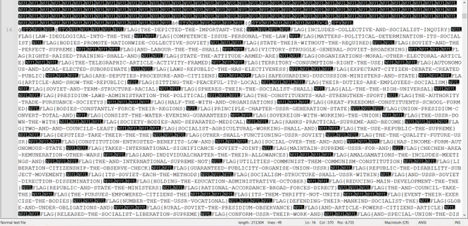
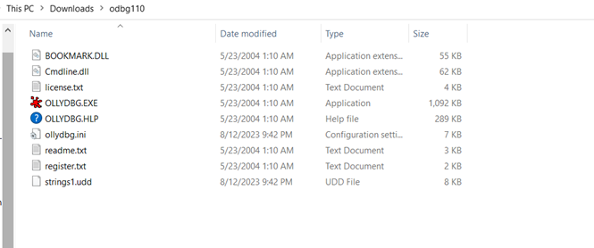
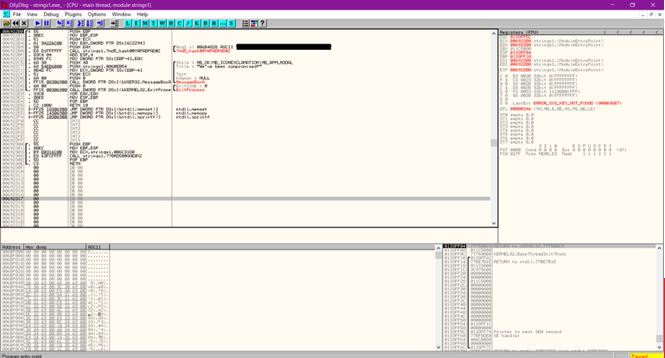
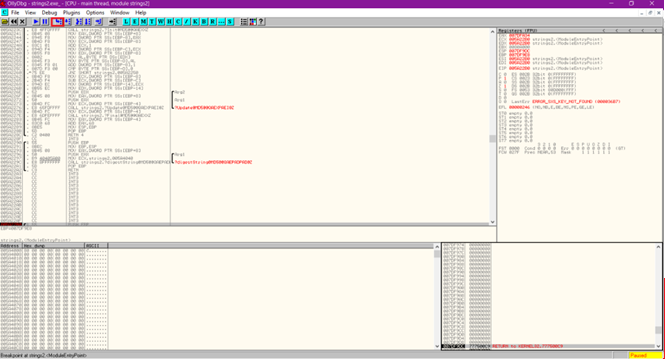

Checking through Notepad+++ does not reveal much because there are too many options.
Screenshot below:
Now we go and try to use OllyDBG (similar tool to IDA Pro) to check if we can get more information.
Shown below:
Using OllyDBG, the flag is revealed right away.
Not so obvious this time, so we use the step into function of OllyDBG.
After stepping through, we find the flag.
After stepping through, we notice rc.rc.
After noticing LoadStringA, we add a breakpoint. After running the program, the breakpoint is
triggered, and we see the flag.